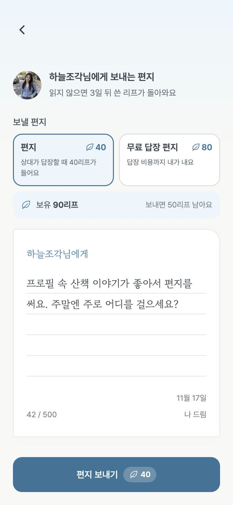
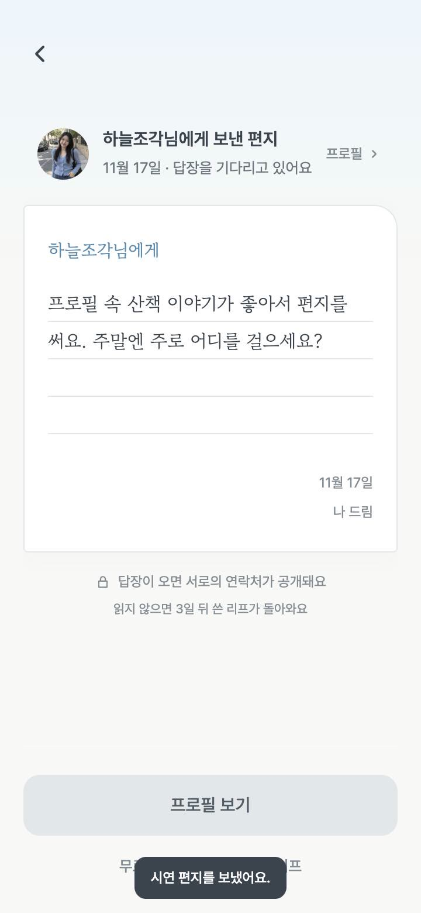
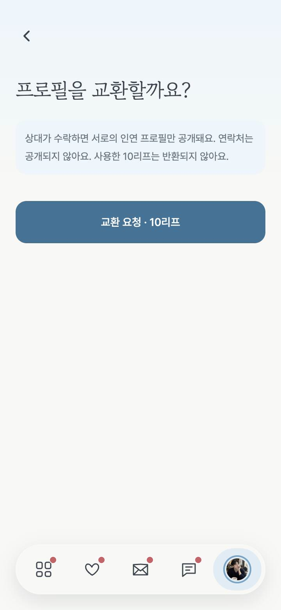
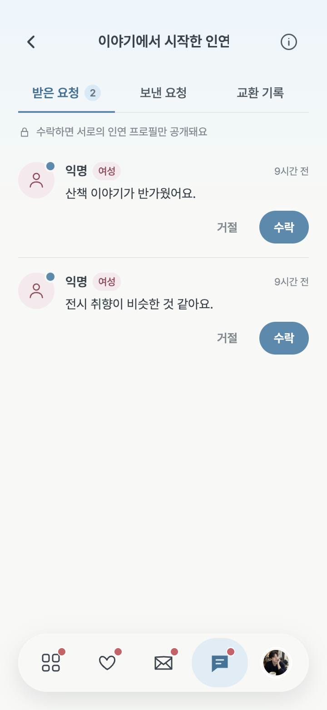
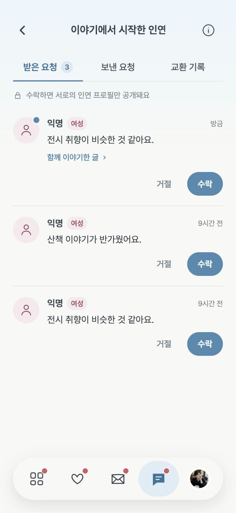
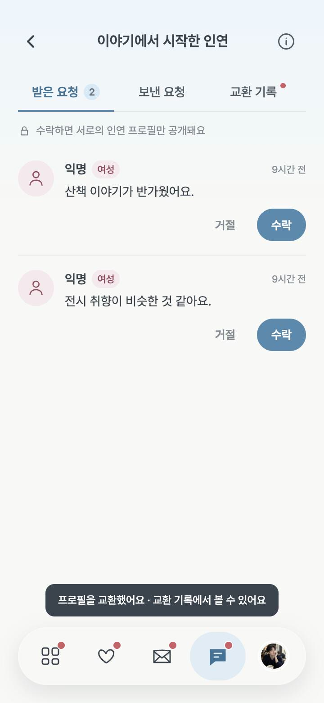

끝낸 순간 3개 · before · after
호감 보내기(줌 스루)와 같은 틀이에요. 뒤 화면이 다가오며 흐려지고 → 막 → 가운데 그림이 맺히고 → 막이 걷히면 다음 화면에 도착해요. 오른쪽 휴대폰을 누르면 재생돼요.
속도
1 · 편지 보냄
before
누르기 전 지금 · 누른 뒤


바로 보낸 편지 화면으로 넘어가고, 검은 알림 "시연 편지를 보냈어요."가 아래 줄을 가려요.
after
 휴대폰을 누르면 재생
휴대폰을 누르면 재생
막 색
편지가 맺힌 뒤 살짝 숨을 고르고 위로 날아가요. 글 "하늘조각님에게 편지를 보냈어요". 막이 걷히면 보낸 편지 화면, 검은 알림은 없어요.
2 · 프로필 교환 요청 보냄
before
누르기 전 지금 · 누른 뒤


아무 반응 없이 교환 화면으로 넘어가고, 받은 요청 탭이 열려서 방금 보낸 요청이 안 보여요.
after
 휴대폰을 누르면 재생
휴대폰을 누르면 재생
막 색
내 사진과 익명 동그라미가 다가가고, 내 쪽이 톡 두드리면 상대 쪽에 고리가 퍼져요. 글 "교환 요청을 보냈어요". 막이 걷히면 보낸 요청 탭에 방금 요청이 있어요.
3 · 프로필 교환 수락
before
누르기 전 지금 · 누른 뒤


줄이 왼쪽으로 빠지고 알림 한 줄. 서로의 프로필이 열리는 순간인데 조용하고, 상대는 교환 기록 탭에 따로 가야 보여요.
after
 휴대폰을 누르면 재생
휴대폰을 누르면 재생
막 색
두 동그라미가 겹쳐지며 익명이 상대 사진으로 또렷해지고, 작은 하트가 퍼져요. 글 "서로의 프로필이 열렸어요". 막이 걷히면 교환 기록 탭에 상대가 있어요.